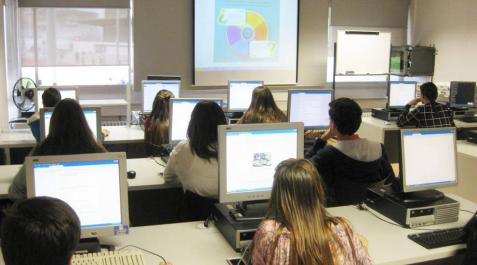
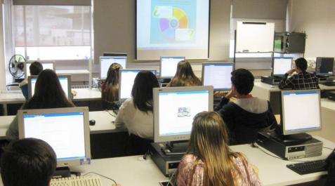

TEST web 2.0
Comprueba tus conocimientos completando este test:

¡Gracias por jugar!
-La web 2.0 es un fenómeo social que surgió gracias al desarrollo de diversas aplicaciones del internet y establece una distinción entre la primera época de la Web y la segunda que supuso un auge de los blogs y las redes sociales. La Web 2.0 es declarada como la red como plataforma, aquella que distribuye un software como un servicio constantemente actualizado.
-También es denominada como "web social" ya que ofrece la posibilidad de elaborar trabajos colaborativos entre varios usuarios. Los usuarios dejan de ser pasivos y se convierten en activos capaces de contribuir en el contenido de la red. Estas herramientas llevadas al ámbito educativo sirven para promover el trabajo en equipo entre los alumnos.
-Antes de la llegada de esta nueva versión de la Web, se utilizaban páginas programadas con lenguaje HTML, pero no eran actualizadas frecuentemente. El éxito de las .com dependía de las webs más dinámicas donde los sistemas de gestión de contenido servían páginas HTML desde una base de datos actualizada. El factor principal de esto era conseguir visitas.
 

Comprueba tus conocimientos completando este test:
¡Gracias por jugar!